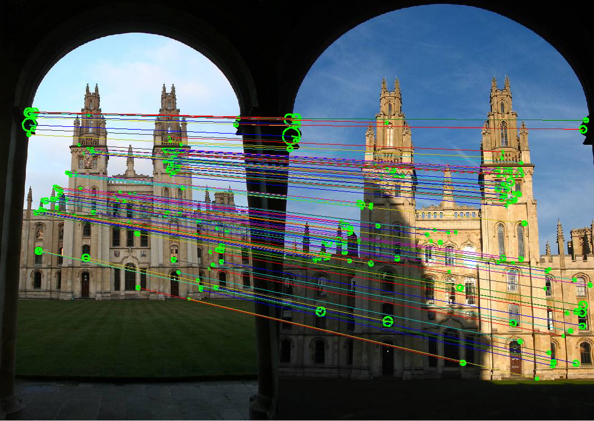
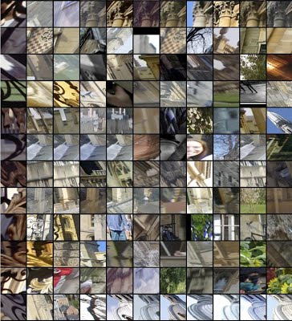
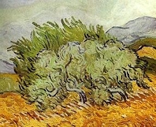
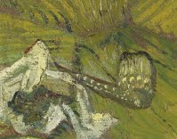

Recognition of object instances practical
This is an Oxford Visual Geometry Group computer vision practical, authored by Andrea Vedaldi and Andrew Zisserman (Release 2015a).

The goal of instance-level recognition is to match (recognize) a specific object or scene. Examples include recognizing a specific building, such as Notre Dame, or a specific painting, such as ”Starry Night” by Van Gogh. The object is recognized despite changes in scale, camera viewpoint, illumination conditions and partial occlusion. An important application is image retrieval – starting from an image of an object of interest (the query), search through an image dataset to obtain (or retrieve) those images that contain the target object.
The goal of this session is to get basic practical experience with the methods that enable specific object recognition. It includes: (i) using SIFT features to obtain sparse matches between two images; (ii) using affine co-variant detectors to cover changes in viewpoint; (iii) vector quantizing the SIFT descriptors into visual words to enable large scale retrieval; and (iv) constructing and using an image retrieval system to identify objects.
Getting started
Read and understand the requirements and installation instructions. The download links for this practical are:
- Code and data: practical-instance-recognition-2015a.tar.gz 560MB
- Code only: practical-instance-recognition-2015a-code-only.tar.gz 10MB
- Data only: practical-instance-recognition-2015a-data-only.tar.gz 550MB
- Git repository (for lab setters and developers)
After the installation is complete, open and edit the script exercise1.m in the MATLAB editor. The script contains commented code and a description for all steps of this exercise, relative to Part I of this document. You can cut and paste this code into the MATLAB window to run it, and will need to modify it as you go through the session. Other files exercise2.m, exercise3.m, and exercise4.m are given for Part II, III, and IV.
Note: the student packages contain only the code required to run the practical. The complete package, including code to preprocess the data, is available on GitHub.
Part I: Sparse features for matching object instances
Stage I.A: SIFT features detector
The SIFT feature has both a detector and a descriptor. We will start by computing and visualizing the SIFT feature detections for two images of the same object (a building facade). Load an image, rotate and scale it, and then display the original and transformed pair:
% Load an image
im1 = imread('data/oxbuild_lite/all_souls_000002.jpg') ;
% Let the second image be a rotated and scaled version of the first
im3 = imresize(imrotate(im1,35,'bilinear'),0.7) ;% Display the images
subplot(1,2,1) ; imagesc(im1) ; axis equal off ; hold on ;
subplot(1,2,2) ; imagesc(im3) ; axis equal off ;A SIFT frame is a circle with an orientation and is specified by four parameters: the center
% Compute SIFT features for each
[frames1, descrs1] = getFeatures(im1, 'peakThreshold', 0.01) ;
[frames3, descrs3] = getFeatures(im3, 'peakThreshold', 0.01) ;
subplot(1,2,1) ; imagesc(im1) ; axis equal off ; hold on ;
vl_plotframe(frames1, 'linewidth', 2) ;
subplot(1,2,2) ; imagesc(im3) ; axis equal off ; hold on ;
vl_plotframe(frames3, 'linewidth', 2) ;Examine the second image and its rotated and scaled version and convince yourself that the detections overlap the same scene regions (even though the circles have moved their image position and changed radius). It is helpful to zoom into a smaller image area using the MATLAB magnifying glass tool. This demonstrates that the detection process transforms (is co-variant) with translations, rotations and isotropic scalings. This class of transformations is known as a similarity or equiform.
Task: The number of detected features can be controlled by changing the
peakThresholdoption. A larger value will select features that correspond to higher contrast structures in the image. Try this now: run again the same code, but increasepeakThresholdtwo or three times.
Now repeat the exercise with a pair of natural images. Start by loading the second one:
% Load a second image
im2 = imread('data/oxbuild_lite/all_souls_000015.jpg') ;and plot images and feature frames. Again you should see that many of the detections overlap the same scene region. Note that, while repeatability occurs for the pair of natural views, it is much betterfor the synthetically rotated pair.
Question: Note the change in density of detections across the image. Why does it change? Will it be a problem for matching? How could it be avoided?
Question: Occasionally, a feature is detected multiple times, with different orientations. This may happen when the orientation assignment is ambiguous. Which kind of image structure would result in ambiguous orientation assignment?
Stage I.B: SIFT features descriptors and matching between images
Next we will use the descriptor computed over each detection to match the detections between images. We will start with the simplest matching scheme (first nearest neighbour of descriptors) and then add more sophisticated methods to eliminate any mismatches.
- Visualize the SIFT descriptors for the detected feature frames with the function
vl_plotsiftdescriptor. Then usevl_plotframeto overlay the corresponding frames.
Question: Note the descriptors are computed over a much larger region (shown in blue) than the detection (shown in green). Why?
Compute first nearest neighbours matches - for each SIFT descriptor in the first image, compute its nearest neighbour in the second image with the function
findNeighbours.Visualize the correspondences using lines joining matched SIFT features with the function
plotMatches.
Question: Notice that there are many mismatches. Examine some of the mismatches to understand why the mistakes are being made. For example, is the change in lighting a problem? What additional constraints can be applied to remove the mismatches?
Hint: You can visualize a subset of the matches using:
figure; plotMatches(im1,im2,frames1,frames2,matches(:,3:200:end));Stage I.C: Improving SIFT matching using Lowe’s second nearest neighbour test
Lowe introduced a second nearest neighbour (2nd NN) test to identify, and hence remove, ambiguous matches. The idea is to identify distinctive matches by a threshold on the ratio of first to second NN distances. In the MATLAB file, the ratio is nnThreshold = 1NN distance / 2NN distance.
- Vary the ratio
nnThresholdin a range from 0.1 to 0.9, and examine how the number of matches and number of mismatches changes. - A value of
nnThreshold = 0.8is often a good compromise between losing too many matches and rejecting mismatches.
Question: Examine some of the remaining mismatches to understand why they have occurred. How could they be removed?
Stage I.D: Improving SIFT matching using a geometric transformation
In addition to the 2nd NN test, we can also require consistency between the matches and a geometric transformation between the images. For the moment we will look for matches that are consistent with a similarity transformation
which consists of a rotation by
Task: Work out how to compute this transformation from a single correspondence.
Hint: Recall from Stage I.A that a SIFT feature frame is an oriented circle and map one onto the other.
The matches consistent with a similarity can then be found using a RANSAC inspired algorithm, implemented by the function geometricVerification:
RANSAC-like algorithm for geometric verification
- For each tentative correspondence in turn:
- compute the similarity transformation;
- map all the SIFT detections in one image to the other using this transformation;
- accept matches that are within a threshold distance to the mapped detection (inliers);
- count the number of accepted matches;
- optionally, fit a more accurate affine transformation or homography to the accepted matches and test re-validate the matches.
- Choose the transformation with the highest count of inliers.
After this algorithm the inliers are consistent with the transformation and are retained, and most mismatches should now be removed.
Task: The figure generated by
plotMatchessupports the interactive visualisation of the transformation found bygeometricVerification. Try hovering with the mouse on the figure and check that corresponding image points are highlighted in the two images.
Skip to Part 2 on fast track
Task: Test this procedure by varying the threshold distance (edit
geometricVerificationand change theopts.tolerance1,opts.tolerance2, andopts.tolerance3parameters, where the last two thresholds are relative to the optional iterative fitting of an affine transformation or homography to the inliers). Note the number of inliers and number of mismatches.
If more matches are required the geometric transformation can be used alone, without also requiring the 2nd NN test. Indeed, since the 1st NN may not be the correct match, a list of potential (putative) matches can be generated for each SIFT descriptor by including the 1st NN, 2nd NN, 3rd NN etc. Investigate how the number of correct matches (and time for computation) grows as the potential match list is extended, and the geometric transformation is used to select inliers. To this end:
Task: Change the code to include in the match list the 1st NN, 2nd NN, 3rd NN, … best matches for each feature.
Task: Run geometric verification and check the number of verified matches using this expanded list.
Hint: You can use MATLAB’s tic and toc functions to measure the execution time of a snippet of code. For example
tic ; pause(3) ; tocwill pause MATLAB for three seconds and return an elapsed time approximately equal to 3. See help tic for details.
Part II: Affine co-variant detectors
So far the change in viewpoint between images has been a similarity transformation. Now we consider more severe viewpoint changes - for example where an object is fronto-parallel in one view, and turns away from the camera in the other as in the graffiti wall images below:

In this case, there is foreshortening (anisotropic scaling) and perspective distortions between the images (as well as in-plane rotation, translation and scaling). A circle in one image cannot cover the same scene area as a circle in the other, but an ellipse can. Affine co-variant detectors are designed to find such regions.
In the following we will compare the number of matches using a similarity and affine co-variant detector as the viewpoint becomes progressively more extreme. The detectors are SIFT (for similarity) and SIFT+affine adaptation (for affine), while the descriptor are in both cases SIFT.
Task: Open and examine the script
exercise2.min the MATLAB editor. Run the script.
Note the behaviour in the number of verified matches as the viewpoint becomes more extreme. Observe that the matches also identify the regions of the images that are in common.
Question: The transformation between the images induced by the plane is a planar homography. The detections are only affine co-variant (not as general as a planar homography). So how can descriptors computed on these detections possibly match?
Note: There are many other detector variants that could be used for this task. These can be activated by the method option of getFeatures.m (see also help vl_covdet).
Part III: Towards large scale retrieval
In large scale retrieval the goal is to match a query image to a large database of images (for example the WWW or Wikipedia). The quality of a match is measured as the number of geometrically verified feature correspondences between the query and a database image. While the techniques discussed in Part I and II are sufficient to do this, in practice they require too much memory to store the SIFT descriptors for all the detections in all the database images. We explore next two key ideas: one to reduce the memory footprint and pre-compute descriptor matches; the other to speed up image retrieval.
Task: Open and edit the script
exercise3.min the MATLAB editor, and cut and paste to work through the following stages.
Stage III.A: Accelerating descriptor matching with visual words
Instead of matching feature descriptors directly as done in Part I and II, descriptors are usually mapped first to discrete symbols, also called visual words, by means of a clustering technique like K-Means. The descriptors that are assigned to the same visual word are considered matched. Each of the rows in the following figure illustrates image patches that are mapped to the same visual word, and are hence indistinguishable by the representation.

Then, matching two sets of feature descriptors (from two images) reduces to finding the intersection of two sets of symbols.
Tasks:
- Load a visual word dictionary and an associated approximate nearest neighbour (ANN) matcher (the ANN matcher is used to determine the closest visual word to each descriptor and is based on a forest of KD trees).
- Given SIFT descriptors for two images, quantise them (assign them) into the corresponding visual words.
- Find corresponding features by looking for the same visual words in the two images and note the computation time.
- Geometrically verify these initial correspondences and count the number of inlier matches found.
- Find corresponding features by using the method of Part I and II, i.e. by comparing the descriptors directly, and note the computation time. Geometrically verify these initial correspondences and count the number of inlier matches found.
- Compare the speed and number of inliers when using visual words vs raw SIFT descriptors by means of the function
matchWords. Note, you should repeat the timing (by running the matching again) as the first time you run it there may be a delay as certain MATLAB components are loaded into memory.- Optional: compare the speed and number of matches over another pair of images (from part I and II).
Questions:
- The size of the vocabulary (the number of clusters) is an important parameter in visual word algorithms. How does the size affect the number of inliers and the difficulty of computing the transformation?
- In the above procedure the time required to convert the descriptors into visual words was not accounted for. Why?
- What is the speedup in searching a large, fixed database of 10, 100, 1000 images?
Skip to Stage III.B on fast track
Often multiple feature occurrences are mapped to the same visual word. In this case matchWords generates only one of the possible matches.
Tasks:
- Modify
matchWordsto generate more than one match for cases in which multiple features are mapped to the same visual word.This can be achieved by increasing the value ofmaxNumMatches.- Most of these additional matches are incorrect. Filter them out by running
geometricVerification.- Compare the number of inliers obtained before and after this modification.
Stage III.B: Searching with an inverted index
While matching with visual words is much faster than doing so by comparing feature descriptors directly, scoring images directly based on the number of geometrically verified matches still entails fitting a geometric model, a relatively slow operation. Rather than scoring all the images in the database in this way, we are going to use an approximation and count the number of visual words shared between two images.
To this end, one computes a histogram of the visual words in a query image and for each of the database images. Then the number of visual words in common can be computed from the intersection of the two histograms.
The histogram intersection can be thought as a similarity measure between two histograms. In practice, this measure can be refined in several ways:
- By reducing the importance of common visual words. This is similar to a stop-words list and can be implemented by weighting each word by the `inverse document frequency’ (the inverse of the frequency of occurrence of that visual word over the entire database of images).
- By normalising the weighted histograms to unit vectors and using the cosine between them as similarity. This can be implemented easily as the inner product between normalised histograms.
Computing histogram similarities can be implemented extremely efficiently using an inverted file index. In this exercise, inner products between normalized histograms are computed quite efficiently using MATLAB’s built-in sparse matrix engine.
We now apply this retrieval method to search using a query image within a 660 image subset of the Oxford 5k building image set.
Task: How many erroneously matched images do you count in the top results?
Question: Why does the top image have a score of 1?
Stage III.C: Geometric rescoring
Histogram-based retrieval results are good but far from perfect. Given a short list of top ranked images from the previous step, we are now going to re-score them based on the number of inlier matches after a geometric verification step.
Question: Why is the top score much larger than 1 now?
Question: Are the retrieval results improved after geometric verification?
Stage III.D: Full system
Now try the full system to retrieve matches to an unseen query image.
Part IV: Large scale retrieval
Skip and end here on fast track
The images below are all details of paintings. The goal of this last part of the practical is to identify the paintings that they came from. For this we selected a set of 1734 images of paintings from Wikipedia.

To identify the details you can either:
- use your knowledge of art
- search through the 1734 Wikipedia images until you find matches
- build a recognition system and match the details automatically
We follow route (3) here. Look through and run exercise4.m. This uses the techniques described in Part III in order to construct an index for 1734 Wikipedia images so that they may be searched quickly. Use the code to find from which paintings these details come from.
Note, although the index is stored locally, the matching images are downloaded from Wikipedia and displayed. Click on the image to reach the Wikipedia page for that painting (and hence identify it).
Task: Use the code to visually search Wikipedia for further paintings from Van Gogh downloaded from the Internet.
Note: the code supports URL in place of filenames.
Take note of the code output.
Questions:
- How many features are there in the painting database?
- How much memory does the image database take?
- What are the stages of the search? And how long does each of the stages take for one of the query images?
That completes this practical.
Links and further work
- The code for this practical is written using the software package VLFeat. This is a software library written in MATLAB and C, and is freely available as source code and binary.
- The images for this practical are taken from the Affine Covariant Features dataset, and the Oxford Buildings benchmark.
- For a tutorial on large scale visual search and references to the literature, see the lectures by Josef Sivic and Cordelia Schmid here.
- For recent developments in large scale search (compact image descriptors, compression with product quantization), see these lectures by Herve Jegou and Florent Perronnin.
Acknowledgements
- Guidance from Josef Sivic, Ivan Laptev and Cordelia Schmid
- Mircea Cimpoi for scripts for downloading and linking to Wikipedia paintings
- Comments from Relja Arandjelovic, Karen Simonyan, Omkar Parkhi, Meelis Lootus, Hossein Azizpour, Max Jaderberg
- Funding from ERC grant VisRec Grant No. 228180, and a PASCAL Harvest Grant.


History
- Used in the Oxford AIMS CDT, 2014-15
- Used at ENS/INRIA Visual Recognition and Machine Learning Summer School, 2012.
- Used at JHU Summer School on Human Language Technology, 2012.